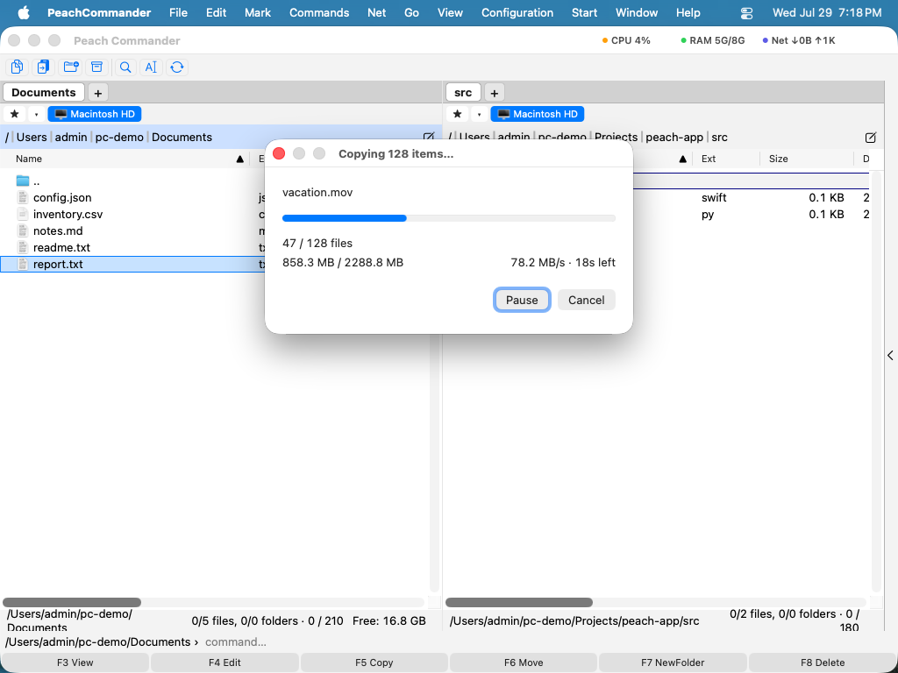

Copiare i file
Peach Commander è costruito attorno a due pannelli affiancati: uno contiene i file su cui state lavorando, l'altro è la destinazione. La copia prende ciò che è selezionato nel pannello attivo e ne colloca un duplicato nella cartella mostrata nell'altro pannello, lasciando gli originali al loro posto. È il modo più rapido per duplicare file e cartelle tra due posizioni senza trascinare.
Copiare una selezione nell'altro pannello
- In un pannello, aprite la cartella che contiene gli elementi da copiare.
- Nell'altro pannello, aprite la cartella in cui devono andare le copie.
- Selezionate i file e le cartelle da copiare. Se non è selezionato nulla, viene usato l'elemento sotto il cursore.
- Premete F5. Si apre la finestra di copia, che mostra il percorso di destinazione già compilato.
 (Figura: la finestra di copia. Il percorso di destinazione punta all'altro pannello; usate le opzioni per regolare con precisione la copia.)
(Figura: la finestra di copia. Il percorso di destinazione punta all'altro pannello; usate le opzioni per regolare con precisione la copia.)
- Modificate la destinazione se necessario, poi confermate per avviare la copia.
Opzioni di copia
Prima di confermare, potete modificare il comportamento della copia:
- Solo file più recenti — salta ogni elemento la cui copia esiste già ed è della stessa età o più recente, così vengono aggiornati solo i file modificati.
- Conserva i metadati — mantiene date, permessi e altri attributi dei file sulle copie. È attiva per impostazione predefinita.
- Limite di velocità — limita la velocità di trasferimento affinché una copia di grandi dimensioni non saturi il disco o la connessione di rete.
- Maschera di rinomina — digitate un pattern con caratteri jolly nel campo di destinazione (ad esempio
*.bak) per rinominare gli elementi durante la copia.
Potete anche inviare l'operazione alla coda in background invece di seguirla — vedi Trasferimenti in background.
Avanzamento
Una finestra di avanzamento mostra il file corrente e l'operazione complessiva con barre separate, oltre alla velocità di trasferimento. Potete mettere in pausa e riprendere in qualsiasi momento, oppure inviare la copia in corso al gestore dei trasferimenti in background per continuare a lavorare mentre viene completata.

(Figura: la finestra di avanzamento mostrata durante una copia o uno spostamento.)Gestione dei file già esistenti
Se una copia dovesse sostituire un file esistente, Peach Commander si ferma e chiede cosa fare. Un'anteprima di entrambi i file vi aiuta a decidere.
 (Figura: la finestra di sovrascrittura confronta il file esistente con quello in fase di copia.)
(Figura: la finestra di sovrascrittura confronta il file esistente con quello in fase di copia.)
Le vostre scelte comprendono:
- Sovrascrivi il file esistente, oppure Sovrascrivi tutto per applicarlo a ogni conflitto rimanente.
- Salta questo file, oppure Salta tutto i conflitti rimanenti.
- Rinomina automaticamente la copia in arrivo così che entrambi i file vengano mantenuti.
- Accoda i dati in arrivo alla fine del file esistente.
- Sovrascrivi solo quando l'origine è più recente o più grande del file esistente.
Scorciatoie
| Azione | Tasto |
|---|---|
| Copiare la selezione nell'altro pannello | F5 |
| Copiare nella stessa cartella (creare un duplicato rinominato) | Shift+F5 |
| Aprire il gestore dei trasferimenti in background | Cmd+Shift+B |
Note
- Copiare tra due posizioni sullo stesso disco usa una clonazione rapida quando il disco la supporta, così i file di grandi dimensioni vengono copiati quasi istantaneamente e usano poco spazio aggiuntivo.
- Le cartelle vengono copiate con tutto il loro contenuto.
- Per spostare i file invece di copiarli, usate F6. Per seguire o gestire le operazioni in coda, aprite il gestore dei trasferimenti in background con Cmd+Shift+B.